Konsept
Camlara tek bir büyük görsel işlenir. Görsel kayıtlarla bölünse de bütün olarak okunur: kayıtlar tasarımın önünde kalır, görsel arkada kesintisiz devam eder.
Ön cephe · giriş
Koşucu sol cam grubunda, yüzü camın ortasında. Kutuya sıçrayan sporcu sağ grupta. Girişin iki yanındaki hız çizgileri bakışı kapıya taşır; otomatik kapı şeffaf kalır.
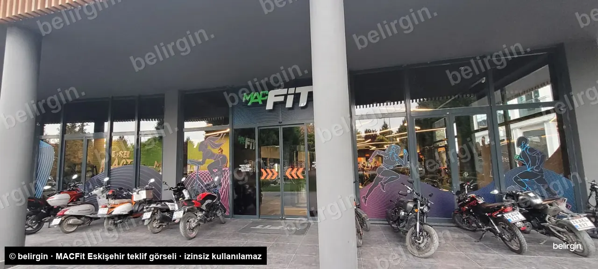
MevcutUygulama sonrasıKarşılaştırmak için görselin üzerinde sağa sola kaydırın.
Köşe
Solda ön cephe, köşeyi dönünce yan cephe. Beş sporcu tek bir ışık dalgası üzerinde soldan sağa akar. Üst camlar boş bırakılarak cephe ferahlatılır.
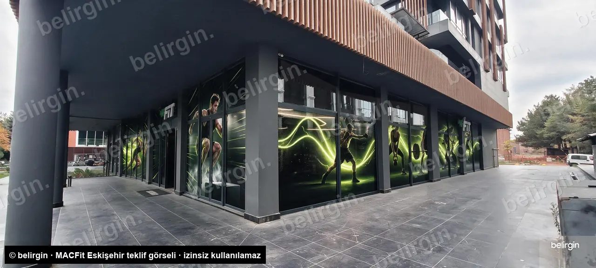
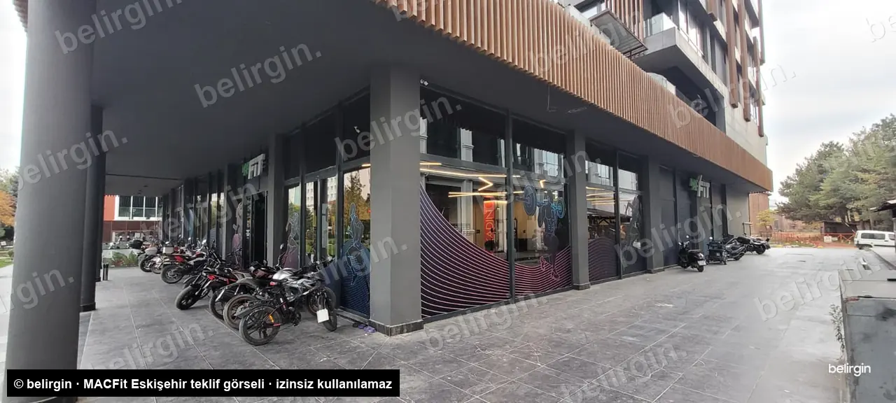
MevcutUygulama sonrasıYan cephe
Tek kahraman görsel: barı başının üstüne kaldıran halterci, plakalar iki yeşil gezegen. Kırık cam değiştirilmeden önüne çerçeveli kompozit panel monte edilir.
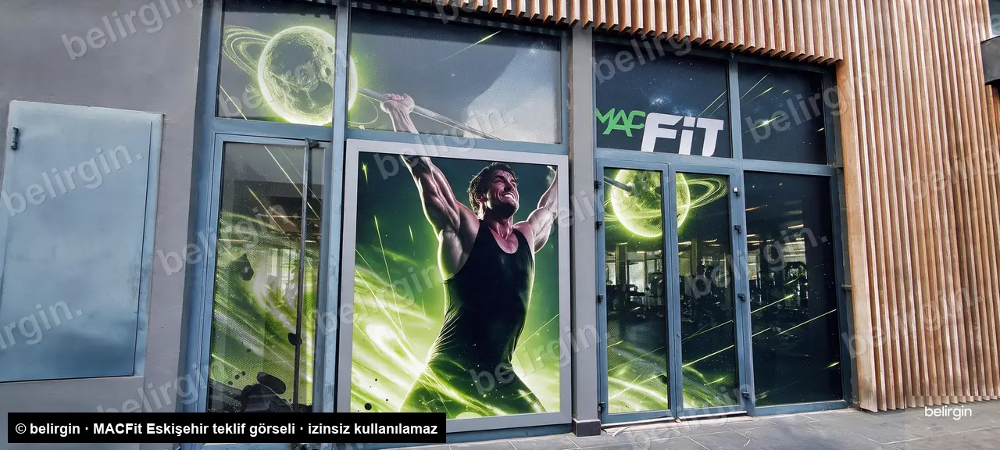
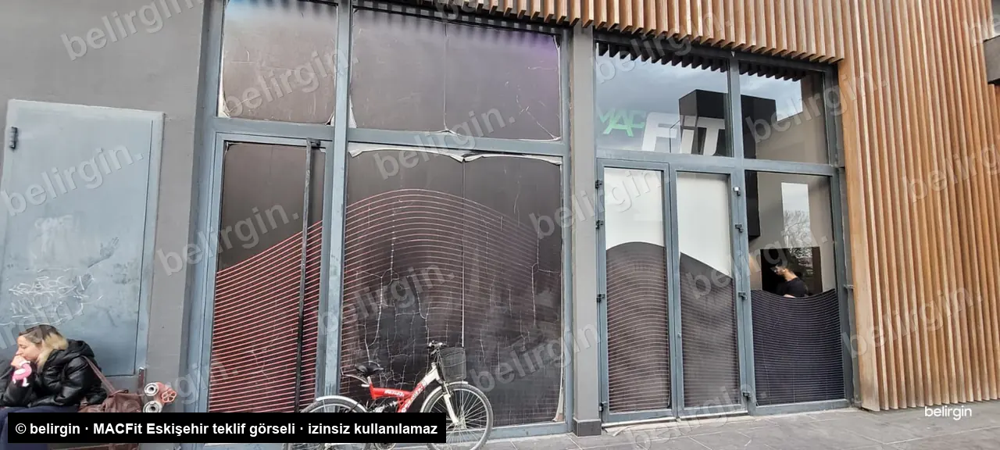
MevcutUygulama sonrasıTasarımlar
Baskıya gidecek düz tasarım dosyaları. Cam ölçüleri netleştiğinde her cephe gerçek ölçüsüne göre büyütülüp panel panel kesilir.
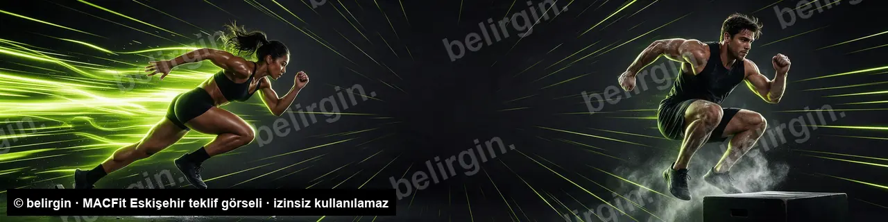
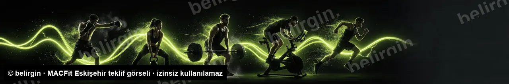
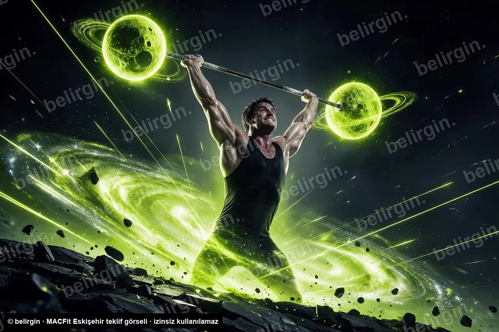
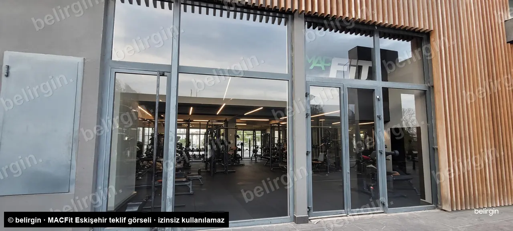
Cam planı
Her cam numaralandırıldı. Revizyon ve baskı kesimi bu numaralar üzerinden yürür.
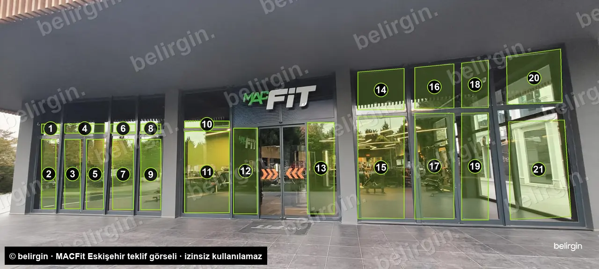
| Cephe | Baskılı | Boş / özel |
|---|---|---|
| Ön | 1–21 tümü, üst camlar dahil | Otomatik kapı şeffaf |
| Köşe | 1–13 ön cephe tasarımı · 15 17 19 21 · 22–26 köşe tasarımı | 14 16 18 20 boş, şeffaf |
| Yan | 1–4 · 6–10 yarı saydam folyo | 5 kırık cam önüne kompozit panel, 5 cm çerçeve |
Uygulama
Üye masası · müşteri takip uygulaması
Mevcut ve potansiyel üyeler için takip sistemi. Ön iletişimi uygulama yürütür: doğum günü, yenileme, geri kazanım ve kampanya mesajları otomatik gider. Olumlu yanıt veren ya da yanıt vermeyen kritik kişiler personelin arama listesine düşer.
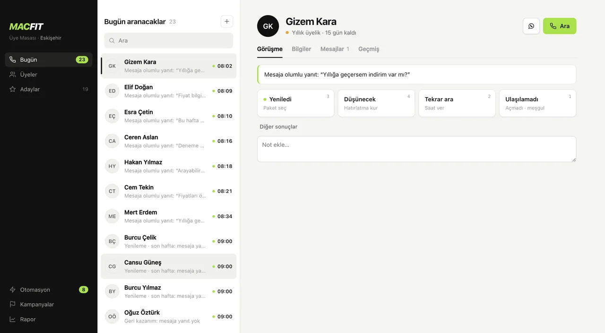
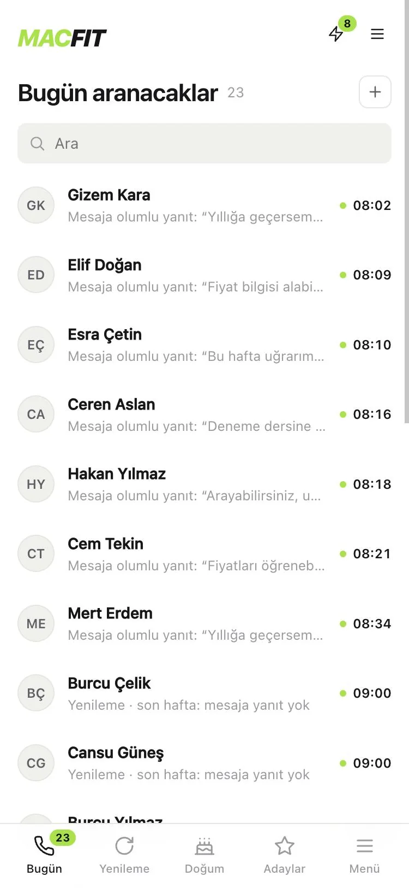
Demo telefonda ve bilgisayarda çalışır. Kişiler hayalidir; arama ve WhatsApp açılmaz, mesaj yanıtları simüle edilir.